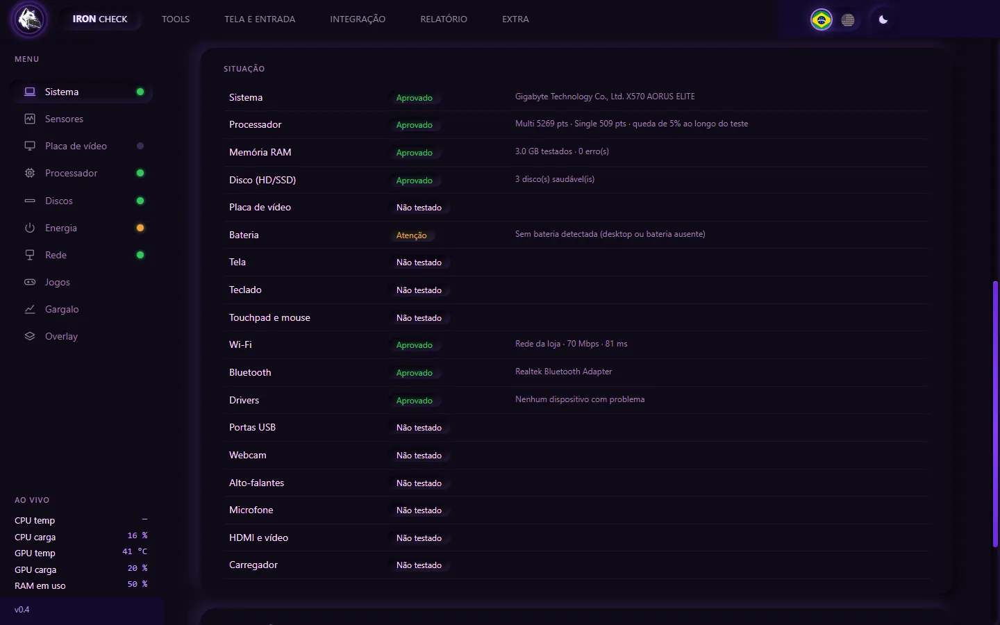
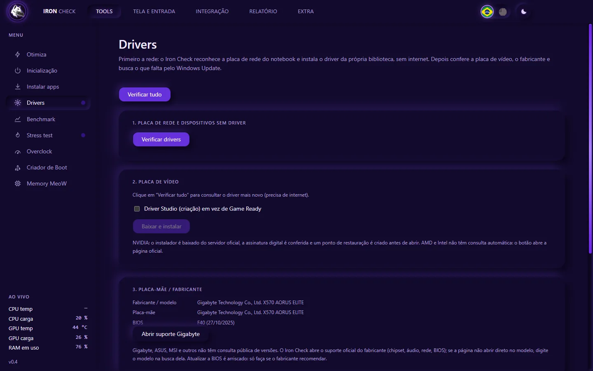
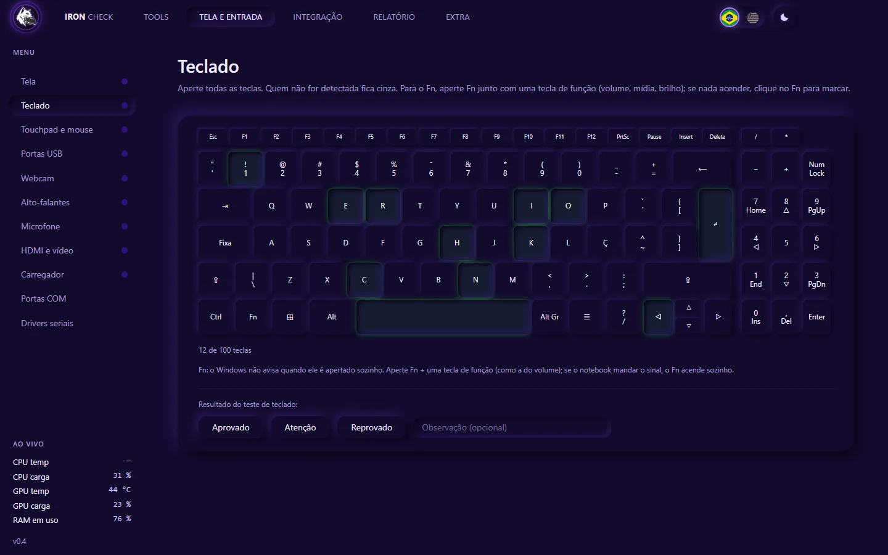
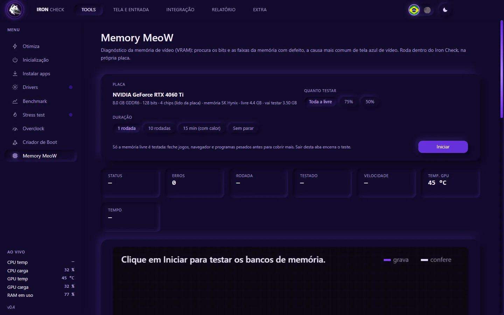
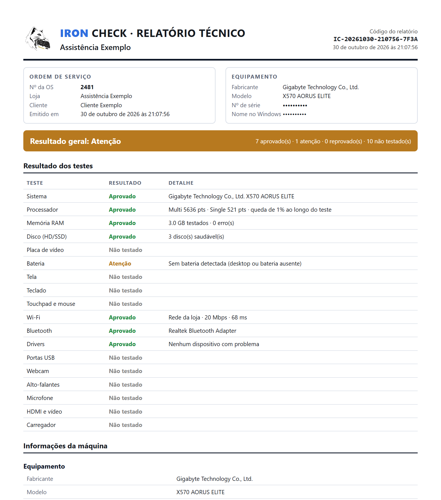

Testa o aparelho inteiro
Sistema, bateria, disco, memória, processador, Wi-Fi e Bluetooth em sequência, cada um com o seu veredito.
O Iron Check testa o computador inteiro, instala o driver que falta (o da placa de rede funciona até sem internet) e emite um laudo em PDF com a ordem de serviço do seu cliente. Tudo em português (e em inglês, com um clique), num programa que roda do pendrive.
Windows 10 ou 11 (64 bits) · roda do pendrive, sem instalar · a chave de teste libera o programa completo por poucos dias
Clique no menu da tela: é o menu real do programa, em fotos das telas de verdade. As bandeiras trocam o idioma e, no Benchmark, cada teste mostra a sua animação.
O Iron Check enche a tela de cor, uma de cada vez. Mancha, vazamento de luz e pixel apagado aparecem na hora, antes de o aparelho voltar para o cliente.
Painel de exemplo, feito nesta página. Passe o mouse (ou o dedo) para acender os pixels e ache o que não acende. No preto, o defeito é o pixel que não apaga.
Um programa no pendrive, do balcão à entrega.

Sistema, bateria, disco, memória, processador, Wi-Fi e Bluetooth em sequência, cada um com o seu veredito.

Formatou e ficou sem rede? O driver de mais de 400 placas vai junto no pendrive.
Stress test e 7 benchmarks com nota, para comparar antes e depois do conserto.
SMART, varredura só de leitura e desempenho, em HD, SSD SATA e NVMe.

Tela, teclado, touchpad, portas USB, webcam, alto-falantes e microfone.

O Memory MeoW grava e confere a memória da placa de vídeo em 12 padrões e aponta a causa provável.

Exemplo de laudo gerado pelo programa. Os identificadores do aparelho foram ocultados.
PDF com a sua loja, a OS e o resultado de cada teste. Se o aparelho volta, você mostra como ele saiu.
No WhatsApp. A de teste vale por alguns dias.
Baixe o kit, extraia e abra. Sem instalar.
Testes automáticos e manuais, e o PDF da OS.
A chave de teste libera o programa completo por alguns dias. Depois, assinatura mensal por Pix, com uma chave para todos os seus computadores.
Windows 10 ou 11, 64 bits. Extraia o kit e leve a pasta inteira para o pendrive. · Todas as versões
Os gratuitos são ótimos, cada um numa coisa, e você pode continuar com eles. O Iron Check junta o que você usa no balcão num lugar só, em português, e faz o que eles não fazem: testa portas USB, webcam, microfone e alto-falantes, instala o driver da rede sem internet e emite um laudo em PDF com a OS e a conferência de autenticidade do arquivo.
Peça a chave de teste no WhatsApp: ela vale por poucos dias e libera o programa completo. Para assinar, você paga a mensalidade por Pix, manda o comprovante e recebe a sua chave, que serve em vários computadores. Para saber o valor, é só perguntar no WhatsApp.
O programa (Iron-Check-Portatil.exe, 92 MB) já abre sozinho. O kit completo traz também a pasta drivers, com a biblioteca de drivers de rede que o programa usa para instalar sem internet. Extraia o kit e deixe a pasta drivers ao lado do .exe.
Não. Você abre o arquivo de qualquer pasta ou do pendrive. Na primeira vez ele prepara os arquivos numa pasta ao lado dele; depois abre rápido. A chave e as configurações ficam nessa pasta, não no computador do cliente.
Os testes não. A varredura do disco só lê, o teste de desempenho usa um arquivo temporário que é apagado no fim, e o Criador de Boot só mexe em pendrives USB (e avisa que apaga o pendrive). As poucas ferramentas que mudam o Windows pedem confirmação e guardam o valor original ou uma cópia.
É o aviso normal de programas novos no SmartScreen: clique em Mais informações e depois em Executar assim mesmo. O pedido de administrador também é normal: o Windows exige essa permissão para ler a saúde dos discos e a temperatura e para instalar drivers.
O programa continua funcionando por até 24 horas com a última confirmação. Passado esse prazo sem conseguir conferir, ele fica bloqueado até a licença ser confirmada. Seus arquivos nunca são apagados.
Ela é para uso da sua assistência. O servidor registra os computadores e o local aproximado de cada uso, e o uso por muitas pessoas é detectado: a chave pode ser bloqueada.
Windows 10 ou 11, de 64 bits, em notebook ou PC de mesa. Bateria, touchpad e carregador só fazem sentido em notebook. Os testes funcionam com qualquer placa de vídeo; overclock, leitura detalhada e instalação do driver de vídeo são para NVIDIA GeForce.
Fale direto com o desenvolvedor, peça a chave e comece hoje.